Alfred Lansing's ending
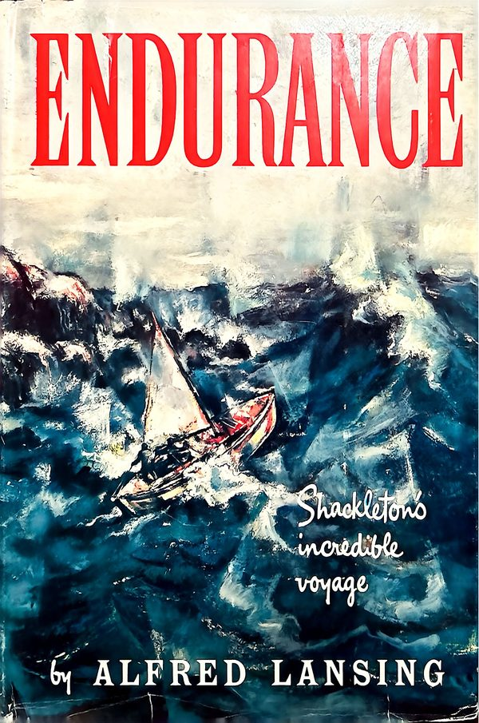
I think Alfred Lansing's Endurance: Shackleton's Incredible Voyage is the best account of the expedition. I have read it about ten times. I love every bit of it except the very last sentence before the epilogue:
When he saw the three men he stepped back and a look of disbelief came over his face. For a long moment he stood shocked and silent before he spoke. "Who the hell are you?" he said at last. The man in the center stepped forward. "My name is Shackleton," he replied in a quiet voice. Again there was silence. Some said that Sørlle turned away and wept.
This never made sense to me. Why would Sørlle weep, and not Shackleton? Sørlle had hosted the expedition at Stromness two years earlier, but he and Shackleton were not close, and the Norwegian whalers were tough men. If anyone was going to cry at that moment, I thought it should have been Shackleton.
Later books repeat it, but disagree on who wept
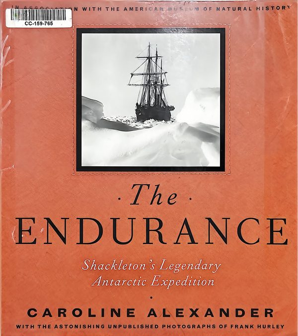
Lansing's account seems to have shaped later books. Caroline Alexander, in The Endurance: Shackleton's Legendary Antarctic Expedition, writes:
An old Norwegian whaler who was also present gave an account, in his broken English, of the meeting. "Manager say: 'Who the hell are you?' and terrible bearded man in the centre of the three say very quietly: 'My name is Shackleton.' Me—I turn away and weep."
In this account the one who wept is the old whaler himself ("Me—I turn away and weep"), not Sørlle.
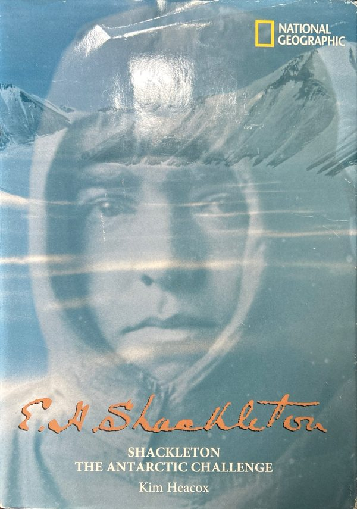
Kim Heacox, in Shackleton: The Antarctic Challenge, writes:
"I know your voice," Sørlle replied, a little uncertain. "My name is Shackleton." The disbelief was unanimous, and at least one old whaler who witnessed the exchange turned away and wept tears of joy.
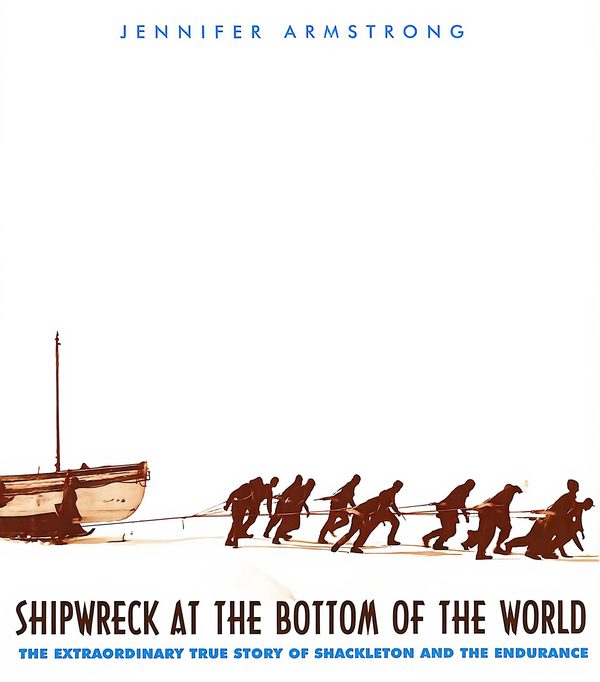
Jennifer Armstrong, in Shipwreck at the Bottom of the World, writes:
"My name is Shackleton." Sørlle gaped in astonishment at the three ragged castaways, and then he turned his head away and wept.
So depending on the book, the one who wept is Sørlle or an old whaler. None of them says it was Shackleton, Worsley or Crean.
What the eyewitnesses wrote
This puzzled me for a long time, until I realized the way to settle it was to read what the men at the door wrote themselves. Three men walked into Stromness: Shackleton, Worsley and Tom Crean. Shackleton and Worsley both described the meeting in their own books.
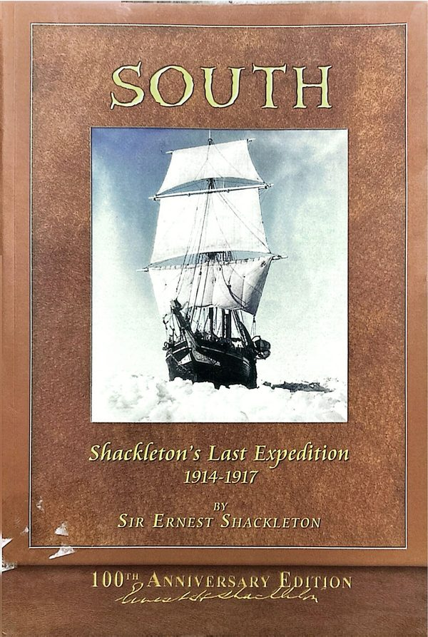
Shackleton, in South:
Mr. Sørlle came out to the door and said, 'Well?' 'Don't you know me?' I said. 'I know your voice,' he replied doubtfully. 'You're the mate of the Daisy.' 'My name is Shackleton,' I said. Immediately he put out his hand and said, 'Come in. Come in.' ...
No one weeps.
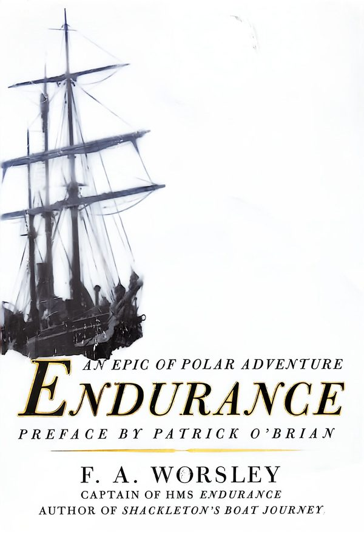
Worsley wrote two books about the expedition. In Endurance: An Epic of Polar Adventure he writes:
Our old friend Captain Sorlle, who had entertained us two years previously when the Expedition had touched Stromness Bay, failed to recognise us as we stood on his doorstep.
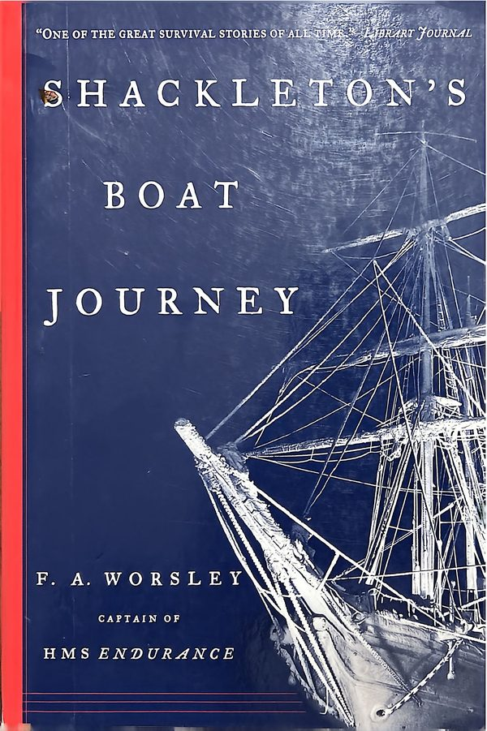
In Shackleton's Boat Journey he gives more detail:
Sørlle came out and Shackleton said "Do you know me?" Sørlle said "No." Then I said "Do you know me?" He looked at me and said emphatically "No", and evidently did not want to! When Shackleton told him we had lost our ship and crossed the island, Sørlle almost dragged us in. Sir Ernest, to be polite, said to Sørlle: "I'm afraid we smell." But he replied: "That doesn't matter, we're used to it on a whaling station!"
No one weeps in either book. Worsley's account also differs from Shackleton's: in Worsley's version Sørlle says he does not know them, and in Shackleton's he mistakes Shackleton for the mate of the Daisy. The third man, Tom Crean, left no written account.
Where the weeping comes from
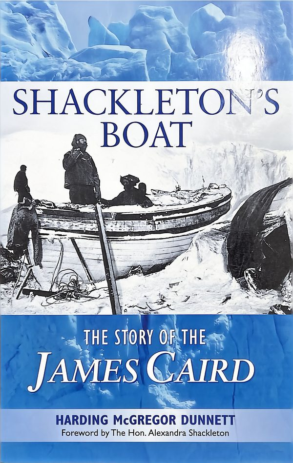
None of the three eyewitnesses mentions anyone weeping, or the line "Who the hell are you?". Both come from an old Norwegian whaler who was present. Harding McGregor Dunnett, in Shackleton's Boat: The Story of the James Caird, gives the fullest version of his account I have found:
The story goes that an old Norwegian whaler, who was present, gave his own version of the meeting, in his broken English: 'Everbody know Shackleton well, and we very sorry he is lost in ice with all hands. We not know three terrible-looking bearded men who walk into office off the mountainside. Manager say "Who the hell are you?" And terrible bearded man in the centre of the three say, very quietly: "My name is Shackleton." Me, I turn aside and weep. I think manager weep too.'
This explains both versions of the story. The whaler says he wept, and he thinks Sørlle wept too. Alexander quotes the first part ("Me—I turn away and weep"). Lansing and Armstrong use the second part, in which Sørlle weeps. Lansing's "Some said" matches the whaler's "I think".
It also answers my original question. The whalers wept because they believed Shackleton had died in the ice with all his men, and now he was standing in front of them.
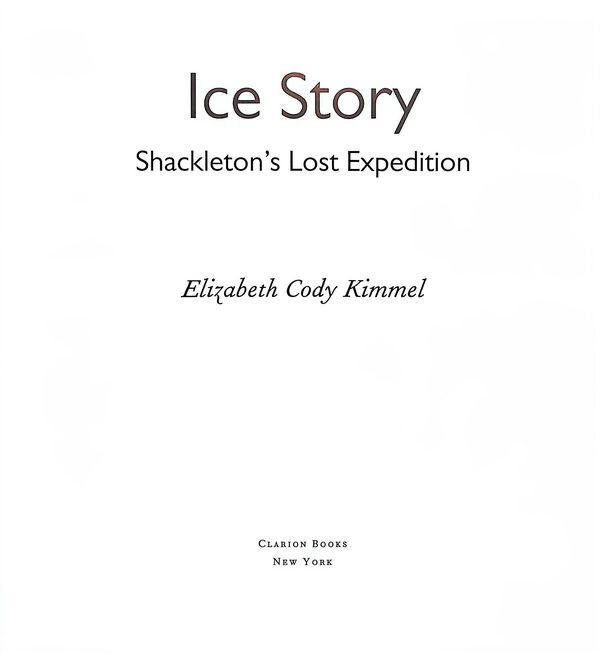
Elizabeth Cody Kimmel, in Ice Story, handles the disagreement honestly:
There are different stories about what happened next. Worsley remembered Sorlle denying he knew them, until Shackleton revealed his name. Shackleton recalled Sorlle confusing him with another man. A sailor standing next to Sorlle said that upon hearing Shackleton give his name, Sorlle began to weep with amazement and shock. Whatever happened, all agree that Sorlle quickly took the three men into his home.
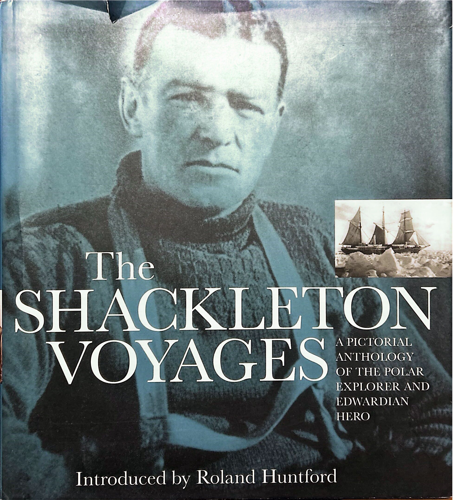
Roland Huntford, in The Shackleton Voyages, simply writes:
The three castaways made their way to the house of the station manager. His name was Thoralf Sørlle. He had met Shackleton before; he did not recognise the figure before him now. Identity established, Sørlle forbore to remind Shackleton that he had predicted shipwreck from the start. He was only amazed at the tale of survival that was now being poured out. Shackleton was equally amazed at the news from the outside world relayed by Sørlle.
A second detail that doesn't fit
Lansing also writes:
"Would you please take us to Anton Andersen," he said softly. The foreman shook his head. Anton Andersen was not at Stromness any longer... He had been replaced by the regular factory manager, Thoralf Sørlle. The Englishman seemed pleased. "Good," he said. "I know Sørlle well."
Neither Shackleton nor Worsley mentions Anton Andersen at all. Both say they asked for Sørlle directly. It seems unlikely that both eyewitnesses would leave out the same exchange.
Here too Lansing's version shaped later books: both Caroline Alexander and Kim Heacox write that Shackleton asked for Anton Andersen first.
Conclusion
The three men who were there do not record anyone weeping. The weeping comes from an old whaler who was present. He says he wept himself, and only thinks that Sørlle wept too. Lansing kept the uncertain part, softened it with "Some said", and made it the last line of the book. The source of the whaler's account is still unclear, since Dunnett also introduces it with "The story goes". Together with the Anton Andersen exchange, which neither Shackleton nor Worsley mentions, I think Lansing chose the most dramatic version available for his ending.
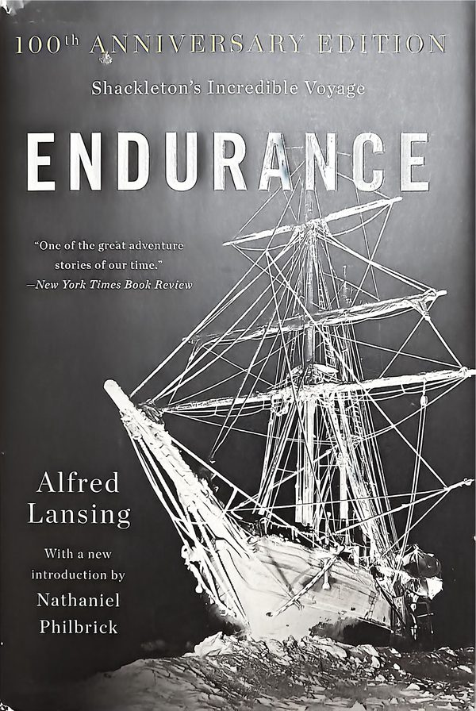
PS: I wrote to Nathaniel Philbrick, who wrote the introduction to the 100th anniversary edition of Endurance. He replied:
Hi Lang,
Good to hear from you. It's been many years since I researched the foreword to Endurance, and I'm afraid I'm not going to be of much help in answering your questions. Since Lansing spoke with some of the survivors, there is a chance he collected some accounts of the incidents that go beyond the ones you quote. But once again, I'm only guessing.
All the best,
Nat Philbrick